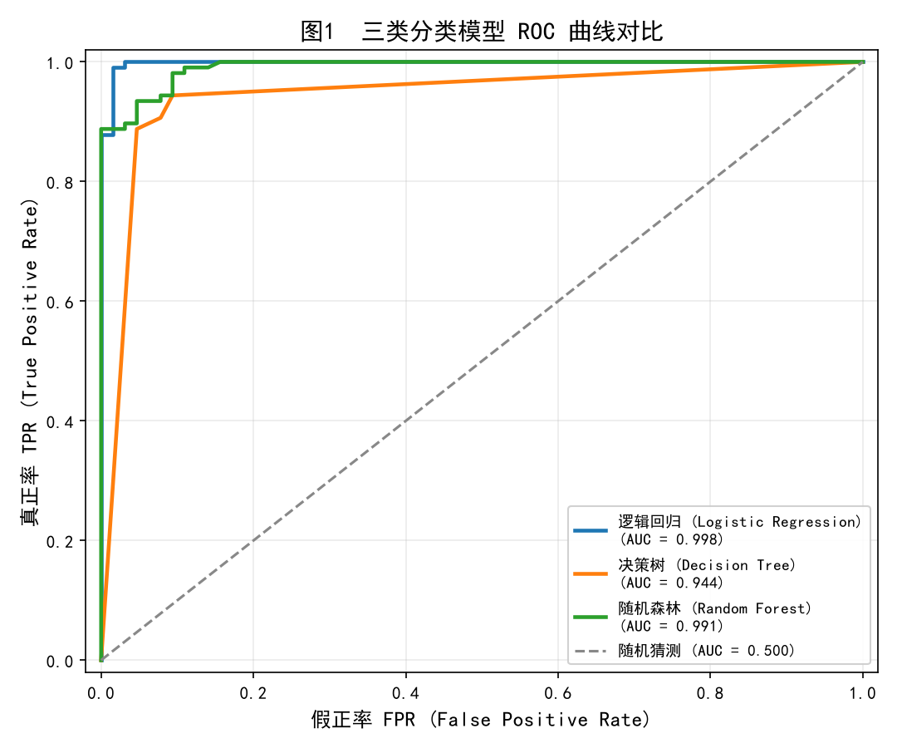
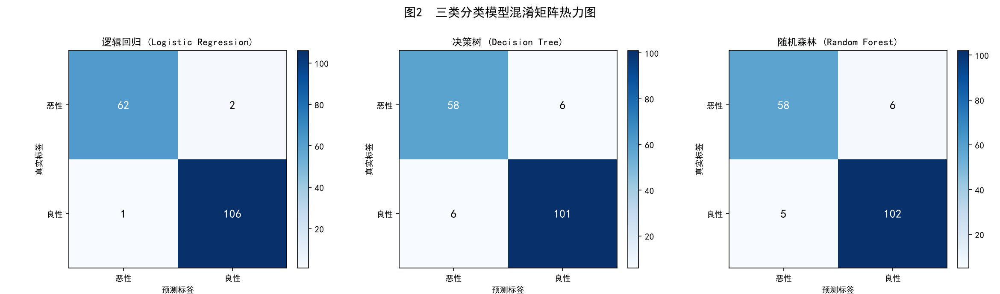

AI交易引擎：分类模型 · ROC/AUC · 混淆矩阵
数据集 & 模型配置
| 模型 | 准确率 | 精确率 | 召回率 | F1分数 | AUC |
|---|---|---|---|---|---|
| 逻辑回归 (Logistic Regression) | 0.9825 | 0.9815 | 0.9907 | 0.9860 | 0.9980 |
| 随机森林 (Random Forest) | 0.9357 | 0.9444 | 0.9533 | 0.9488 | 0.9913 |
| 决策树 (Decision Tree) | 0.9298 | 0.9439 | 0.9439 | 0.9439 | 0.9441 |
三模型在测试集上的受试者工作特征曲线

图1：逻辑回归 AUC≈0.998 几乎完美；随机森林 AUC=0.991 紧随其后；决策树 AUC=0.944 表现良好但相对较弱。
三模型预测结果 vs 真实标签的交叉分布

图2：逻辑回归仅3例误判(1.75%)；决策树和随机森林分别有12/11例误判。颜色越深表示该格样本数越多。
实验发现与金融场景启示